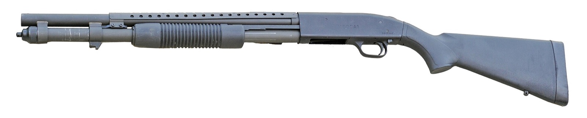

Professional Shotgun Shooting
Shooting a moving target with a pattern instead of a single bullet. This page covers actions and gauges, shells, chokes and patterning, gun fit, the mount, stance, lead methods, the shot string, and the three main clay disciplines.

Built on NRA Basics of Shotgun Shooting, NSCA and NSSA practice, and standard choke and patterning data. Pattern figures are typical values for lead shot at 40 yards. Pattern your own gun and load before relying on them.
01Safety
The four rules
- Treat every firearm as if it's loaded.
- Never point the muzzle at anything you aren't willing to destroy.
- Keep your finger off the trigger until your sights are on the target and you've decided to fire.
- Be sure of your target and what's beyond it.
Shotgun-specific
- Never mix gauges in your pockets. A 20-gauge shell fits into a 12-gauge chamber and slides down to lodge in the barrel. Loading a 12 behind it can burst the barrel.
- Carry break-action guns open between stations. Carry pumps and semi-autos with the action open and the muzzle up or down range.
- Look through the bore before shooting and after any shot with a weak report.
- Shot falls back to earth hundreds of yards away. #7½ lead shot can carry about 250 yards; buckshot and slugs much farther.
- Load only when on the station and ready to call for the target.
On the range
A shared range runs on commands from the range safety officer (RSO). Listen for them the whole time you're on the line. With hearing protection on, commands are easy to miss: electronic muffs make speech easier to hear, and you should watch the RSO, the range lights or flags, and the shooters on either side. If everyone around you has stopped, stop and find out why.
| Command | What it means | What you do |
|---|---|---|
| "The range is hot" | Live fire is allowed. Nobody is forward of the firing line. | Eye and ear protection on, including behind the line. Handle firearms only at your position on the line, muzzle downrange. |
| "Commence fire" | You may load and shoot. | Load only now, and only at the line. Wait for this even when the range has been called hot. |
| "Cease fire" | Stop shooting immediately. Anyone who sees a danger can call it, and everyone obeys it no matter who called it. | Finger off the trigger and out of the guard, muzzle downrange, and stay where you are. Don't load, unload, or step back until the RSO tells you what to do next. |
| "Unload and show clear" | Make your firearm safe and let the RSO check it. | Remove the ammunition, open and lock the action, and show the empty chamber to the RSO. |
| "Is the line clear?" / "The line is clear" | The RSO is confirming, then announcing, that every firearm on the line is unloaded with its action open. | Your gun is benched or racked: action open, chamber flag in, magazines out. Step back behind the safety line. |
| "The range is cold" | Nobody touches a firearm. People may go downrange to check or change targets. | Hands off guns and ammunition, including loading magazines at the bench, until the range is called hot again. Stay behind the safety line unless you're going downrange. |
Wording varies by range and organization; some use "the line is safe," whistles, or lights. Read the posted range rules and listen to the briefing before you shoot. The principle doesn't change: firing stops on a cease fire, and no one goes forward until every gun is verified clear.
Clear the gun before you step off the line
- Finger off the trigger, muzzle downrange.
- Remove the ammunition source first: magazine out, or the magazine tube emptied.
- Open the action and lock it open. Any round in the chamber comes out.
- Look and feel: check the chamber and the magazine well or tube by eye, then with a finger. Do the check every time, even when you're sure it's empty.
- Insert a chamber flag if the range requires one.
- Bench, rack, case, or holster it the way the range rules say. Never walk away from a loaded gun or carry one off the line.
Shotgun: empty the magazine tube completely by cycling the action or using the shell release, then look into both the chamber and the tube or lifter. Count the shells you took out against the number you loaded. A break-action gun leaves the line broken open with both chambers empty.
02Actions and gauges
| Action | How it works | Strengths | Watch for |
|---|---|---|---|
| Over/under | Two barrels stacked; break open to load | Two chokes on tap, single sighting plane, easy to show clear. Standard for clays. | Only two shots; higher cost |
| Side-by-side | Two barrels side by side | Light, fast-handling, classic for upland | Wider sighting plane takes adjustment |
| Semi-automatic | Gas or inertia cycles the action | Softer felt recoil (gas), quick follow-ups | Needs cleaning; light loads may not cycle inertia guns |
| Pump | Shooter cycles the forend | Reliable with any load, inexpensive | Short-stroking under stress |
| Single-shot | One barrel, break-action | Simple, safe for beginners; dedicated trap singles guns | One shot |
03Shells and shot
| Shot size | Diameter | Pellet weight | Pellets per oz (lead) | Typical use |
|---|---|---|---|---|
| #9 | 0.080" | 0.75 gr | ≈585 | Skeet, close sporting targets |
| #8 | 0.090" | 1.07 gr | ≈410 | Skeet, trap (16 yd), sporting |
| #7½ | 0.095" | 1.25 gr | ≈350 | Trap handicap, longer sporting, dove |
| #6 | 0.110" | 1.95 gr | ≈225 | Pheasant, squirrel, rabbit |
| #4 | 0.130" | 3.24 gr | ≈135 | Turkey, ducks (non-toxic shot required for waterfowl) |
| 00 buck | 0.330" | 53.8 gr | 9 per 2¾" shell | Deer where legal, defensive use |
| Slug | bore size | 437 gr (1 oz) | 1 (≈1 oz) | Deer, single projectile out to about 100 yd |
Reading the box
- Shell length (2¾", 3", 3½"): must not exceed the chamber length stamped on the barrel.
- Shot weight (⅞ oz, 1 oz, 1⅛ oz): heavier loads put more pellets in the pattern and kick more.
- Velocity (1,145–1,250 ft/s for most target loads).
- Dram equivalent: an old powder-charge comparison. Compare velocity instead.
Clay rule limits
Registered trap, skeet, and sporting clays in the U.S. cap 12-gauge loads at 1⅛ oz of shot no larger than #7½ (#8 in some cases). Check the current NSSA, NSCA, or ATA rulebook for your event.
04Loads by gauge
Shot charges are listed in ounces; 1 ounce is 437.5 grains. Smaller gauges throw lighter charges, so they put fewer pellets in the air even with the same choke. The 16 gauge sits between the 12 and 20: nearly 12-gauge payloads in a lighter gun.
| Gauge | Target loads | Field loads | Buckshot | Slugs |
|---|---|---|---|---|
| 12 | ⅞–1⅛ oz (383–492 gr), #7½–#9, 1,145–1,250 ft/s | 1¼–1⅝ oz, #4–#6 | 00 buck: 8–9 pellets of 53.8 gr #1 buck: 16 of 40 gr #4 buck: 27 of 20.7 gr | 1 oz (437 gr) Foster, 1,600 ft/s 300 gr sabot, 2,000 ft/s |
| 16 | ⅞–1 oz (383–437 gr), #7½–#8, 1,165–1,200 ft/s | 1–1⅛ oz, #5–#7½ | #1 buck: 12 pellets of 40 gr, 1,225 ft/s | ⅘ oz (350 gr) Foster, 1,600 ft/s 1 oz Brenneke-style, 1,450 ft/s |
| 20 | ⅞ oz (383 gr), #7½–#9, 1,200 ft/s | 1–1¼ oz, #4–#6 | #3 buck: 20 pellets of 23.4 gr | ¾ oz (328 gr) Foster, 1,600 ft/s 250 gr sabot, 1,800 ft/s |
| 28 | ¾ oz (328 gr), #8–#9, 1,200 ft/s | ¾–1 oz, #6–#7½ | rare | rare |
| .410 | ½ oz (219 gr), #8–#9, 1,200–1,250 ft/s | 11/16 oz, #6–#7½ | 000 buck: 3–5 pellets (3") | ¼ oz (109 gr), 1,800 ft/s |
Load explorer
Pick a gauge and load to see the payload, pellet count, and energy per pellet at the muzzle.
05Chokes and patterns
A choke is a slight constriction at the muzzle that controls how quickly the pattern spreads. Tighter chokes keep more pellets in a 30-inch circle at 40 yards. They also leave less room for error up close.
| Choke | 12-ga constriction | % in 30" circle at 40 yd | Effective range for clays |
|---|---|---|---|
| Cylinder | 0.000" | ≈40% | Under 20 yd |
| Skeet | 0.005" | ≈45% | Skeet, 20–25 yd |
| Improved cylinder | 0.010" | ≈50% | 20–30 yd |
| Light modified | 0.015" | ≈55% | 25–35 yd |
| Modified | 0.020" | ≈60% | 30–40 yd; trap singles |
| Improved modified | 0.025" | ≈65% | 35–45 yd |
| Full | 0.030–0.035" | ≈70% | 40 yd+; trap handicap |
Steel shot patterns tighter than lead through the same choke. Use improved cylinder or modified with steel, and never fire steel through a choke marked lead-only or tighter than the maker allows.
06Slug trajectory
Slugs are heavy and slow and lose velocity quickly. Most smoothbore Foster slugs are practical to about 75–100 yards; sabot slugs from a rifled barrel reach 150 yards or more. Pick a gauge and slug to see drop and holds.
07Patterning your gun
Procedure
- Hang paper at least 40 inches square at 40 yards (25 yards for skeet chokes).
- Mark an aiming point in the center. Fire one shot from a rest, aiming as you would at a target.
- Draw the densest 30-inch circle on the sheet, centered on the pattern, not on the aiming point.
- Count the pellet holes inside it and divide by the number of pellets in the shell (from the box or by cutting one open).
- Fire at least 3–5 sheets per choke and load, and average them. Single patterns vary a lot.
What else to check
- Point of impact: where the pattern center is versus the aiming point. Many trap guns shoot 60/40 or 70/30 (more pattern above the aiming point) on purpose for rising targets.
- Gaps: holes in the pattern big enough for a clay to slip through.
- Each barrel on an O/U or SxS. They can shoot to slightly different points.
08Gun fit and eye dominance
With a shotgun your eye is the rear sight. If the gun doesn't put your eye in the same spot over the rib every time, the pattern goes somewhere else. Fit is what makes a good mount produce a good sight picture.
Quick fit checks
- Length of pull: with the gun mounted, about two fingers' width between the thumb of the trigger hand and your nose. A common starting point is 14–14¾".
- Comb height: mount with eyes closed, then open. You should see a little of the rib with the bead sitting on it (a "figure 8" with mid-bead guns). Seeing a lot of rib means the gun shoots high; seeing the back of the receiver means it shoots low.
- Pattern the gun at 16 yd aiming at a dot, mounting quickly, 10 shots. The center of the shots shows where the gun really shoots for you.
Eye dominance
- Extend both arms and make a small triangle with your hands.
- With both eyes open, look through it at a distant object.
- Close one eye at a time. The eye that still sees the object is dominant.
If your dominant eye is opposite your shooting shoulder, either shoot from the other shoulder, or put a small dot of tape on that side of your shooting glasses so the off eye can't take over.
09Mount and stance
Mount
- Start with the muzzle at the hold point and your eyes on the visual pickup point.
- Push the gun out toward the target with the front hand; the muzzle leads the motion.
- Bring the comb up to your cheek. Your head stays still; the gun comes to the face, not the face to the gun.
- The butt settles into the shoulder pocket last.
- The mount and the swing happen together, so the muzzle is on the line of the target as the gun reaches the face.
Stance
- Front foot points toward the break point (where you intend to hit the target).
- Feet about shoulder-width, weight about 60% on the front foot, front knee slightly bent.
- Rotate at the hips and waist to swing, not just the arms. Set up so you're comfortable at the break point and twist back to the hold point.
- Front hand points at the target, index finger along the forend.
10Lead methods
Shot takes time to reach the target, so you shoot where the target will be. All three methods get the muzzle ahead of the target; they differ in where the muzzle starts and how it gets there. Keep the swing going after the shot (follow-through) with every method.
| Method | Muzzle starts | Strength | Weak point |
|---|---|---|---|
| Swing-through | Behind the target | Natural, speed of the swing creates lead | Inconsistent on long crossers; swing speed varies |
| Pull-away | On the target | Accurate, easy to read the line | Muzzle can stall on the target |
| Maintained lead | Ahead of the target | Most consistent at long range | Requires knowing the lead picture; tempts measuring |
11The shot string
Pellets don't arrive as a flat disc. Slower and deformed pellets lag behind, stretching the charge into a column several feet long by 40 yards. A crossing target moving through that column can be hit by trailing pellets even if the lead was slightly long, which is one reason a little extra lead often works better than too little.
12Trap, skeet, sporting clays
| Discipline | Layout | Targets | Typical choke and load |
|---|---|---|---|
| Trap | 5 stations in an arc 16 yd behind one trap house (handicap: 17–27 yd) | Going-away targets at an unknown angle within about 44° (22° each side) | Modified to full; 1⅛ oz #7½ or #8 |
| Skeet | 8 stations; high house left, low house right, 40 yd apart | Fixed crossing targets; singles and doubles from stations 1, 2, 6, 7 | Skeet or IC; #9 |
| Sporting clays | 10–15 stations along a course | Varied: crossers, rabbits, teal, incomers, report pairs, true pairs | Changes by station; carry several chokes |
| 5-Stand | 5 cages, 6–8 traps | Sporting-style menu at each cage | IC or light modified |
13Gun handling
On the station
- Load only when it's your turn and you're on the station.
- Set the feet, set the hold point, set the eyes, then call "Pull" (or your call word).
- Unload before stepping off. With a break-action, open it and leave it open.
Malfunctions
- Pump short-stroke: the forend wasn't run fully back and forward. Run it hard, all the way, both directions.
- Semi-auto fails to cycle: often a light load, a dirty gas system, or a loose hold on inertia guns. Clean the gas piston and try a heavier load.
- Click, no bang: keep the muzzle downrange for 30 seconds in case of a hang fire, then open the action.
14Maintenance
After each session
- Wipe the bores; plastic fouling from wads builds up in the choke area.
- Remove choke tubes, clean the threads in the barrel and on the tube, and apply a thin coat of choke-tube grease.
- Wipe and lightly oil exterior metal, especially in humid weather.
Periodically
- Over/under: clean and grease the hinge pins and monobloc contact points.
- Gas guns: clean the piston, gas ports, and magazine tube.
- Check choke tubes are tight before shooting. Tubes loosen under recoil and a loose tube can be damaged.
15Common errors
| Error | What it does | Fix |
|---|---|---|
| Stopping the gun | Muzzle stalls at the shot; misses behind | Follow through; keep swinging after the shot as if there's a second target |
| Lifting the head | Eye rises above the rib; shot goes high and the shooter loses the target | Keep the cheek on the comb until the target breaks |
| Looking at the barrel or bead | Swing slows, lead becomes measured | Hard focus on the leading edge of the target; see the muzzle only in peripheral vision |
| Mounting then moving | Gun mounted off the line, then chases the target | Mount and move together |
| Muzzle too close to the trap | Gun has to chase the target; swing becomes a jerk | Set the hold point closer to the break point |
| Arm-only swing | Swing stops when the arms run out of range | Turn from the hips; set feet for the break point |
| Wrong choke for the distance | Pattern too thin at range or too tight up close | Match choke to break distance (table above) |